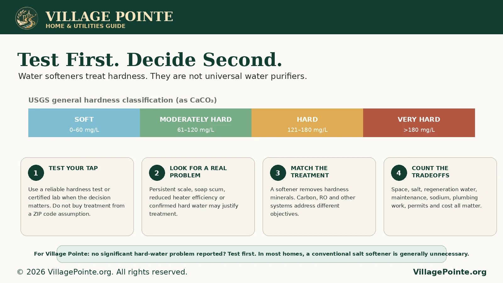
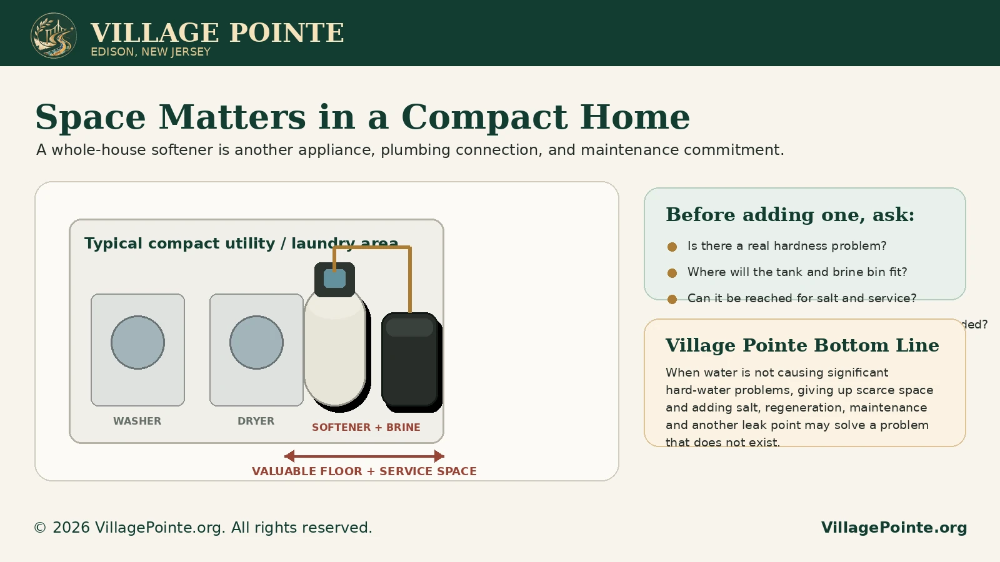

1. Start with the water you actually receive
One of the easiest mistakes in water-treatment shopping is assuming that every home in the same town, ZIP code or neighborhood receives identical water. Edison is a good example of why that assumption fails. The Township operates a municipally owned water distribution system, while Middlesex Water Company provides retail service to portions of Edison and also supplies water wholesale to the Township. Two homes only a short distance apart can therefore be customers of different distribution systems.
Village Pointe residents identify the community as being served by Edison Water, the Township municipal system. Residents also report that nearby areas on the other side of the local service boundary can be supplied directly by Middlesex Water. Because we have not located a current public utility map that establishes the exact Talmadge Road bridge as the legal service boundary, this article does not present the bridge itself as an official utility demarcation. The important and verifiable point is that Edison contains distinct water-provider areas and that Village Pointe's provider should be confirmed by the actual utility account or Township provider information.
That matters because a neighbor's water-softener experience is not a laboratory result for your home. Source water, blending, treatment, distribution mains, building plumbing and individual fixtures can all affect what arrives at the tap.
2. What “hard water” really means
Water hardness is primarily a measure of dissolved calcium and magnesium. It is usually reported as milligrams per liter (mg/L) of calcium carbonate or as grains per gallon (GPG). The U.S. Geological Survey uses a widely cited general classification: 0 to 60 mg/L is soft, 61 to 120 mg/L is moderately hard, 121 to 180 mg/L is hard, and more than 180 mg/L is very hard.
Hardness is mostly a household performance and nuisance issue, not a reason to assume drinking water is unsafe. Hard water can form scale in heaters, pipes and fixtures and can react with soap, reducing lather and creating soap curd. Conversely, removing all hardness is not automatically desirable. USGS notes that it is not always desirable to remove all of the minerals that create hardness.

3. Why Village Pointe generally does not need a whole-house softener
There is no strong evidence that Village Pointe has a hard-water condition severe enough to make a conventional salt-based softener a routine necessity. Longstanding resident experience does not show the widespread heavy scaling, severe soap problems or other obvious symptoms that normally drive whole-house softening. Until a unit-specific hardness test shows otherwise, installing a softener simply because someone elsewhere in North Edison has one is not a sound basis for the expense.
This conclusion is also consistent with Penn State Extension's practical guidance that hardness below about 7 grains per gallon will probably not cause major scaling and soap-film problems. That does not establish Village Pointe's numerical hardness; it provides a useful decision threshold once a resident has measured the actual water.
4. In Village Pointe, space is part of the engineering decision
A conventional ion-exchange softener is not a tiny filter clipped to a faucet. It is usually a point-of-entry appliance with a resin/mineral tank, control head and a separate brine tank containing salt. The installation also needs plumbing connections, a bypass arrangement, access for regeneration discharge, and enough working space to add salt and service the equipment.
Village Pointe homes are comparatively compact inside. Storage and utility space already has to accommodate normal household needs. Giving up accessible floor area for another large appliance is therefore a real cost, even before the purchase price is considered. A piece of equipment that solves a genuine problem may deserve the space. A piece of equipment installed “just in case” may not.

5. What a water softener can do, and what it cannot do
Potential advantages when water is genuinely hard
- Reduces calcium and magnesium hardness.
- Reduces scale on fixtures and inside water-using equipment.
- Improves the cleaning action of soap and detergent.
- Can reduce soap scum and mineral spotting.
- May help protect water heaters and other appliances in genuinely hard-water areas.
Costs and disadvantages
- Consumes valuable floor and service space.
- Requires salt or another regenerant and periodic replenishment.
- Uses water during regeneration and sends brine to a drain.
- Adds valves, fittings and another potential plumbing leak point.
- Requires periodic maintenance and eventual component or resin replacement.
- Ion-exchange softening typically adds sodium to the treated water when sodium chloride is used.
- Does not automatically remove unrelated contaminants simply because the water feels “treated.”
Penn State Extension emphasizes an important consumer point: water softening is a specific treatment for hardness, not a universal purification process. Buying a softener because of concern about taste, PFAS, lead, chlorine, bacteria, sediment or another issue can be the wrong solution if hardness is not the actual problem.
6. Maintenance is not optional
A softener works by passing water through ion-exchange resin. As the resin becomes loaded with calcium and magnesium, the system must regenerate using a concentrated brine solution. That means the homeowner is taking on a continuing maintenance system, not simply purchasing a tank.
- Salt checks and refills: the brine tank must contain the appropriate regenerant. Salt is heavy and must be purchased, carried, stored and poured into the tank.
- Regeneration: the unit periodically backwashes and regenerates. Demand-initiated systems are generally more efficient than older timer-only designs because they regenerate according to actual use.
- Brine-tank care: salt bridges, sludge and deposits can interfere with operation. Tanks require inspection and occasional cleaning according to the manufacturer.
- Resin and valve service: resin can foul and mechanical/control components can eventually require professional service or replacement.
- Leak awareness: every new connection, bypass valve and drain arrangement is another point that should be periodically checked.
University of Minnesota guidance for residential softening describes routine salt-level checks and periodic brine-tank cleaning, while Penn State notes that all softeners require proper maintenance. These obligations are entirely reasonable when the equipment is solving a real hard-water problem. They are unnecessary overhead when it is not.
7. Soft water, soap, and the slippery feeling
There is an important misconception to correct: hard water is what makes soap harder to lather. Softened water generally allows soap to lather more easily, so less soap is needed. USGS specifically explains that someone accustomed to hard water may find soft water feels more slippery because soap lathers more easily and less is required.
For Village Pointe, this is another reason not to chase “ultra-soft” water when there is no demonstrated need. Treatment should improve a real condition, not introduce a new comfort or safety concern.
8. Plumbing, permits, and condominium approval
A whole-house softener can require cutting into the home's water supply, adding bypass valves, providing a regeneration drain and sometimes adding or relocating electrical service. New Jersey's Uniform Construction Code generally requires permits for plumbing, mechanical and electrical work, while exempting qualifying ordinary maintenance. The exact classification depends on the actual scope of work.
For Village Pointe, residents should therefore verify two separate approval tracks before installing a whole-house treatment system:
- Edison Township: ask Construction Code Enforcement whether the proposed plumbing/electrical work requires a permit and inspection.
- Village Pointe: verify any Association or Property Management approval required for plumbing alterations, penetrations, drainage, common elements or other affected building components.
A Township permit does not automatically constitute condominium approval, and condominium approval does not replace a municipal permit where one is legally required.
9. Often, the smarter alternative is targeted treatment
If hardness is not the problem, a softener is not the answer. Water treatment should be selected according to the specific objective and, when appropriate, validated by testing.
| Goal or symptom | Better first step | Possible response |
|---|---|---|
| No meaningful scale or soap problem | Do nothing beyond normal appliance care. | A whole-house softener may provide little practical value. |
| White scale on fixtures or appliances | Test hardness at the tap. | If hardness is confirmed and significant, consider properly sized softening or targeted scale management. |
| Spotting on dishes | Confirm hardness and review dishwasher settings. | Rinse aid, detergent adjustment and periodic descaling may be sufficient. |
| Taste or odor concern | Identify the cause rather than assuming hardness. | A certified carbon or other appropriate filter may be more relevant, depending on the issue. |
| Drinking-water contaminant concern | Review the utility's current water-quality report and test when warranted. | Select a certified treatment technology designed for that contaminant. A softener is not a universal contaminant-removal device. |
| One faucet needs additional treatment | Consider whether whole-house treatment is necessary. | Point-of-use filtration or reverse osmosis may be appropriate for certain specific objectives, with its own maintenance and waste-water tradeoffs. |
NJDEP's guidance on purchasing treatment equipment makes essentially the same decision point: know what needs to be removed, ask whether there is enough space, understand maintenance, determine where waste goes, and verify applicable permits before committing to treatment.
10. If testing says you really do need a softener
When measured hardness and actual household symptoms justify softening, the technology is mature and effective. The next step is to size and install it intelligently rather than simply buying the largest unit offered.
- Use an independent hardness result when the purchase is significant. Free dealer testing can be useful, but an independent measurement reduces the risk of being oversold.
- Size the unit for household water use and measured hardness rather than for marketing claims.
- Prefer demand-initiated regeneration where practical so the system does not regenerate merely because a timer says so.
- Ask exactly how much salt and regeneration water the selected model is expected to use under your conditions.
- Confirm warranty terms, service availability, replacement-part availability and maintenance requirements.
- Discuss whether toilets, exterior faucets or other uses should bypass the softener rather than treating every gallon entering the home.
- If anyone in the household has a medically restricted sodium intake, discuss softened-water sodium with the appropriate healthcare professional.
11. The rule applies far beyond Village Pointe
Generally unnecessary unless testing proves a need.
Village Pointe uses Edison municipal water, residents do not report a significant community-wide hard-water problem, and interior space is valuable. A conventional salt softener should not be treated as standard equipment. Test before buying.
Do not buy by ZIP code, neighbor, or sales pitch.
Measure hardness, identify symptoms, determine what treatment is designed to solve them, and then compare benefits against space, maintenance, salt, water use, permits and cost.
A homeowner in an area with genuinely hard or very hard water may obtain substantial value from a softener. Another homeowner with soft or moderately hard water and no scaling problem may spend money, space and effort to solve very little. Both decisions can be rational because the underlying water is different.
12. Frequently asked questions
Does Village Pointe water need a softener?
For most homes, there is no demonstrated reason to treat a salt-based whole-house softener as necessary. If a unit has persistent scaling or another suspected hardness issue, test the actual water before deciding.
Is all North Edison water the same?
No. Edison has more than one water provider/distribution system. Village Pointe residents identify the community as an Edison Township municipal water customer, while Middlesex Water directly serves portions of Edison. Confirm the provider for the specific address.
Does a water softener make drinking water safer?
Not automatically. A conventional ion-exchange softener primarily reduces hardness minerals. It should not be confused with treatment specifically certified for unrelated contaminants.
Why does softened water feel slippery?
USGS explains that soap lathers more easily in soft water and less soap is needed. People accustomed to harder water may perceive the resulting feel as slippery.
Can I install one without asking anyone?
Do not assume so. In a condominium, both municipal code requirements and Association/management requirements can apply. Verify before work begins.
What should I do before spending money?
Confirm your water provider, measure hardness, document the actual problem, identify the treatment designed for that problem, and obtain written installation and maintenance information.
Official and technical references
These sources support the utility structure, hardness definitions, treatment principles and permit guidance used in this article. Village Pointe-specific observations are identified separately as resident/community information.
Municipal utility information and provider resources. ↗ Edison Township 2024 Master Plan
Official Township planning document noting more than one potable-water provider in Edison. ↗ U.S. Geological Survey: Hardness of Water
Hardness definitions and general classification ranges. ↗ USGS: Hard vs. Soft Water and Soap
Why hard water impairs lather and soft water can feel slippery. ↗ Penn State Extension: Water Softening
Ion exchange, regeneration, maintenance, pros, cons and test-first guidance. ↗ NJDEP: Purchasing Water Treatment Equipment
Testing, treatment selection, space, maintenance, waste and permit considerations. ↗ NJ DCA: Uniform Construction Code General Information
General permit framework for plumbing and other construction work. ↗ Edison Construction Code Enforcement
Local permit and code contact. ↗